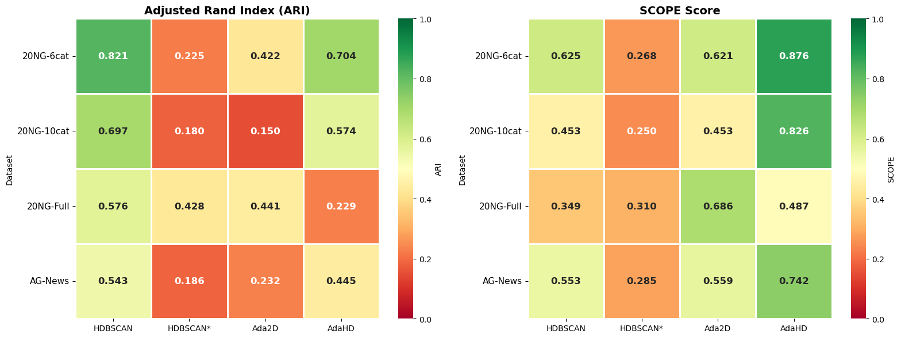
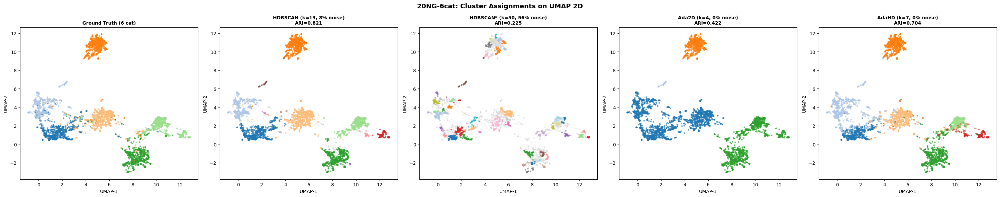
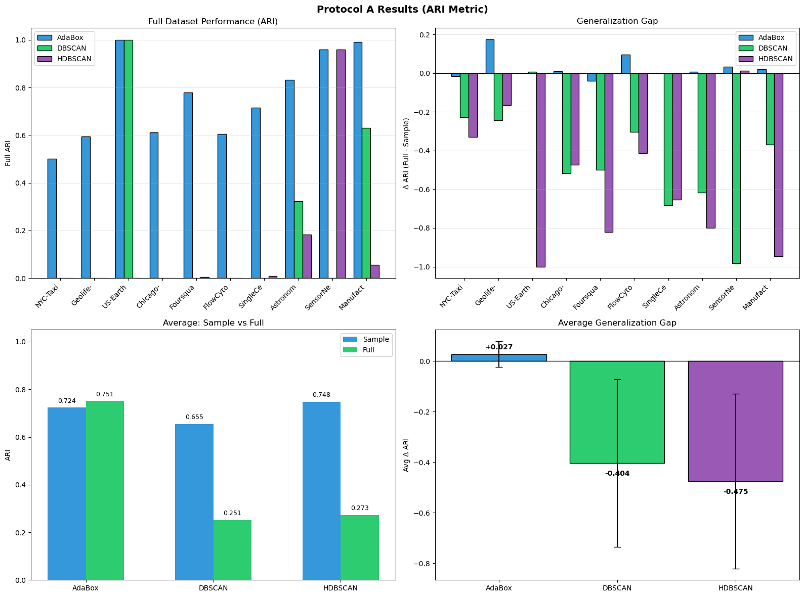

Three components — SCOPE, AdaBox, SLCD — operating together to produce structure-centric clusters in two-dimensional spaces. The strongest known pipeline for any application where UMAP, PCA, or t-SNE precede clustering: text analytics, social listening, customer segmentation, and the entire BERTopic ecosystem.
A five-component metric that evaluates clustering quality and identifies which structural property is failing when quality drops: Core Purity, Boundary Recall, Cluster Precision, Noise F1, and Count Accuracy. Compatible with any density-based algorithm. SCOPE is the tuning objective — replacing ARI as the optimization target produces clusters that match ground truth more reliably than ARI itself does.
The foundation algorithm of the structure-centric family. Operates on a kNN graph of the two-dimensional data. Produces zero noise points by default. Parameters are scale-invariant — the same configuration works whether the dataset has 1,000 or 1,000,000 points. Validated against HDBSCAN across 111 benchmark datasets.
Tune AdaBox parameters on a 1,000-point sample. Deploy those exact parameters to a 500,000-point dataset. Quality is preserved — mean Δ ARI of +0.027 across tested datasets, while DBSCAN loses 0.404 and HDBSCAN loses 0.475 in ARI when their parameters are transferred at scale.
The standard text clustering pipeline in production today is BERTopic: sentence-BERT embeddings → UMAP to two dimensions → HDBSCAN. This is the pipeline that powers most social listening platforms, trend detection systems, and topic modeling tools. The benchmark below replaces only the final clustering step. Ada2D and AdaHD are scored on the same UMAP-reduced 2D data that HDBSCAN operates on.

| Method | Avg ARI | Avg SCOPE | Style |
|---|---|---|---|
| AdaHD (high-D structure-centric) | 0.5015 | 0.7604 | Native HD |
| Ada2D (low-D structure-centric) | 0.4261 | 0.5766 | UMAP → AdaBox |
| HDBSCAN* (tuned) | 0.3611 | 0.3595 | UMAP → HDBSCAN, hyper-tuned |
| HDBSCAN (default) | 0.3516 | 0.3017 | UMAP → HDBSCAN, default |

Existing supervised clustering metrics — ARI, NMI, V-Measure — produce a single score. A bad score tells you something is wrong, but not what. SCOPE produces five independent components that each measure a distinct structural property of the result:
| Component | Measures | Diagnostic |
|---|---|---|
| Core Purity | How clean are dense interior regions? | Low → over-merging of distinct clusters |
| Boundary Recall | Are points near edges correctly placed? | Low → algorithm is too cautious at edges |
| Cluster Precision | Do clusters correspond 1:1 with truth? | Low → fragmentation |
| Noise F1 | Are noise points correctly identified? | Low → either over- or under-discarding |
| Count Accuracy | Is k correct? | Low → wrong number of clusters |
A single SCOPE score of 0.55 on a difficult dataset is not informative on its own. But knowing that Core Purity is 0.92 while Cluster Precision is 0.30 tells you exactly that the algorithm is fragmenting good clusters — not over-merging them, not picking up noise. That diagnostic capability is what makes SCOPE useful as a tuning objective.

• The pipeline already includes UMAP, PCA, t-SNE, or another dimensionality reduction step.
• The data has under ~30 informative dimensions in its raw form.
• The deployment target requires a 2D visualization of the clustering.
• The application is text/topic clustering using sentence-BERT or similar embeddings (the BERTopic case).
• Customer segmentation, behavioral clustering, or trend detection on signal vectors.
For text and social-listening applications, the Low-D stack is a direct drop-in replacement for the HDBSCAN step in any UMAP-then-HDBSCAN pipeline. Integration cost: hours, not weeks.